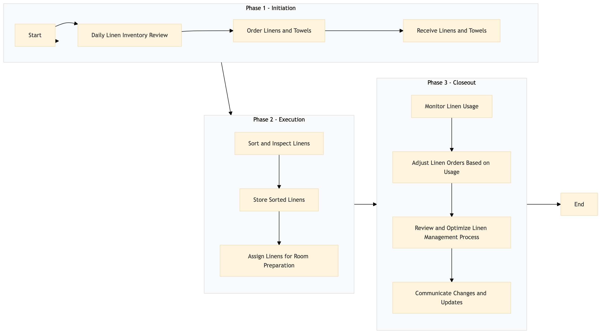

| Role | Steps |
|---|---|
| Executive Housekeeper | 1.1 2.1 3.1 3.3 |
| Procurement Manager | 1.2 2.2 3.2 |
| Receiving Clerk | 1.3 |
| Housekeeping Staff | 2.3 3.4 |
| Step | Name | Role | System | Input | Output | KPI | Dec? | Exc? | Pain Point / Risk |
|---|---|---|---|---|---|---|---|---|---|
| 1.1 | Daily Linen Inventory Review | Executive Housekeeper | Oracle OPERA Cloud | Linen inventory report | Inventory review notes | Less than 5 minutes per room type | Y | N | Inaccurate inventory counts leading to stockouts or overstocking. |
| 1.2 | Order Linens and Towels | Procurement Manager | Birchstreet Procurement | Inventory review notes, order templates | Purchase orders | Less than 30 minutes per day | N | Y | Delays in supplier delivery affecting room readiness. |
| 1.3 | Receive Linens and Towels | Receiving Clerk | Oracle OPERA Cloud | Purchase orders, delivery notes | Inventory update | Less than 15 minutes per order | N | Y | Damaged or incorrect items received from suppliers. |
| 2.1 | Sort and Inspect Linens | Housekeeping Staff | Oracle OPERA Cloud | Received linens, inspection checklist | Inspection report | Less than 20 minutes per batch | Y | N | Inconsistent quality of linens from different suppliers. |
| 2.2 | Store Sorted Linens | Housekeeping Staff | Oracle OPERA Cloud | Inspection report, storage guidelines | Storage records | Less than 10 minutes per batch | N | Y | Incorrect storage leading to damage or loss. |
| 2.3 | Assign Linens for Room Preparation | Housekeeping Staff | Oracle OPERA Cloud | Room preparation list, linen inventory | Linen assignment sheet | Less than 5 minutes per room | N | Y | Inefficient linen distribution causing delays in room readiness. |
| 3.1 | Monitor Linen Usage | Executive Housekeeper | Oracle OPERA Cloud | Daily usage reports, occupancy data | Usage analysis report | Less than 20 minutes per day | Y | N | Overlooking trends leading to stockouts or excess inventory. |
| 3.2 | Adjust Linen Orders Based on Usage | Procurement Manager | Birchstreet Procurement | Usage analysis report, order templates | Adjusted purchase orders | Less than 30 minutes per week | N | Y | Inaccurate forecasting leading to stock imbalances. |
| 3.3 | Review and Optimize Linen Management Process | Executive Housekeeper | Oracle OPERA Cloud | Process review checklist, feedback from staff | Process improvement plan | Less than 1 hour per month | Y | N | Lack of continuous process improvement leading to inefficiencies. |
| 3.4 | Communicate Changes and Updates | Executive Housekeeper | Oracle OPERA Cloud, Knowcross HotSOS | Process improvement plan, communication templates | Communication logs | Less than 30 minutes per update | N | Y | Poor communication leading to confusion or non-compliance. |
The Linen & Towel Management process at a Marriott full-service hotel ensures that guest rooms are provided with clean and sufficient linens and towels for optimal guest satisfaction.